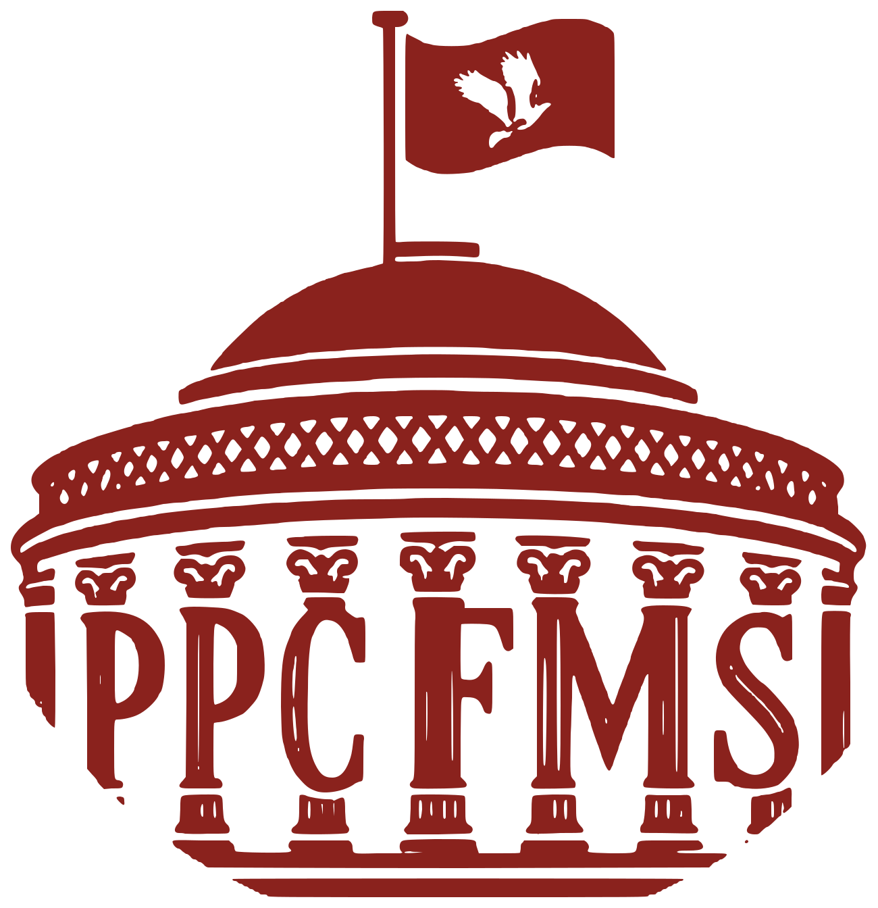

Every business decision is made inside a policy.
The Public Policy Club at the Faculty of Management Studies, University of Delhi, helps future managers read policy as closely as they read a balance sheet.

Why a policy club at a business school
Firms do not operate in isolation. Tariffs, data-protection rules, production incentives, carbon markets and tax reform decide where companies build, what they sell and who they hire. As India's economy changes quickly, managers who understand why a policy exists, and whom it affects, can see change coming instead of reacting to it.
FMS is well placed to build that understanding. Our alumni hold senior positions in government, our faculty work on public-sector projects, and leading business schools across the country already run policy clubs. The Public Policy Club gives FMS students a place to do the same.
It is a necessary competency for leaders who will be expected to not only respond to policy changes, but also anticipate them.
Mission
To build policy literacy among FMS students through reading, debate and direct conversation with the alumni, faculty and practitioners who shape public policy.
Vision
Business leaders who ask not just what a policy says, but why it exists, whom it affects and how it changes the incentives of firms, workers, consumers and governments.
Our foundation
The club was proposed by FMS students in the 2024–25 academic year and founded in February 2025.
- Students propose a club dedicated to public policy at FMS.
- The Public Policy Club is founded.
- The club publishes the first volume of the PPC Journal.
What we do
- PPC JournalShort, business-focused summaries of the year's policy developments, across five areas from international relations to sustainability.
- Article of the WeekOne policy issue, explained in a single read, written by club members.
- EventsGuest talks, roundtables on the Union Budget and NITI Aayog reports, policy workshops and mock parliament debates.